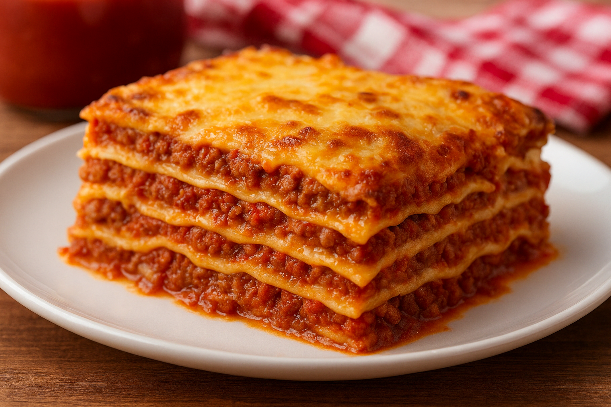

Homemade Lasagna

Description
A rich and comforting Italian classic made with layers of pasta, creamy cheese, and a flavorful meat sauce.
This homemade lasagna is perfect for family dinners or when you want to impress guests with something hearty and delicious.
Ingredients
- 9 lasagna noodles
- 500 g ground beef
- 1 onion, chopped
- 2 cloves of garlic, minced
- 700 g tomato sauce
- 250 g ricotta cheese
- 200 g mozzarella cheese, shredded
- 50 g grated Parmesan cheese
- 1 egg
- 1 tablespoon olive oil
- Salt and pepper to taste
Steps
- Preheat the oven to 180°C (350°F).
- Cook the lasagna noodles according to the package instructions. Drain and set aside.
- In a pan, heat olive oil and sauté the onion and garlic until soft. Add the ground beef and cook until browned.
- Pour in the tomato sauce, season with salt and pepper, and let it simmer for about 10 minutes.
- In a bowl, mix the ricotta cheese, egg, and half of the Parmesan cheese.
- Spread a thin layer of sauce at the bottom of a baking dish. Add a layer of noodles, then a layer of the cheese mixture, then some sauce and mozzarella. Repeat the layers until all ingredients are used.
- Finish with mozzarella and Parmesan on top.
- Bake for 25-30 minutes or until golden and bubbly.
- Let it rest for 10 minutes before serving.
Home